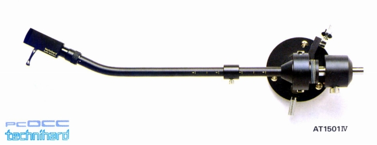

AT-1503�W
■価格 69,000円
■型式 スタティックバランス型
■全長 320�o
■実行長 257�o
■オーバー・ハング 15�o
■針圧範囲 0〜3.0g 0.5gステップ
■アーム高さ
■アームベース穴
■トラッキングエラー
■カートリッジ自重 1〜19g（シェル含まず）
■線間容量
■発売 1986年11月
■販売終了 年
■備考 価格は1986年頃のもの
正式名称は「AT1503�W」
（1503/1501共通）
付属機能：インサイドフォースキャンセラー
付属シェルやパイプ、軸受ブロック等はテクニハード（超硬質アルミ合金）
内部配線はPCOCC。
オプションのサブウェイトW-2使用で対応カートリッジ自重 〜52g(1503
1501は42g)（シェル含む）
オプションのアームレストATR-1（5,800円)あり
AT-1501�W

■価格 74,000円
■型式 スタティックバランス型
■全長 348�o
■実行長 285�o
■オーバー・ハング 12�o
■針圧範囲 0〜3.0g
■アーム高さ 28〜65�o
■アームベース穴 21�o
■トラッキングエラー 1.30゜
■カートリッジ自重 13.5〜33g（シェル含む）
■線間容量
■発売 1986年11月
■販売終了 年
■備考 価格は1986年頃のもの
正式名称は「AT1501�W」
テクニカのインデックスへ